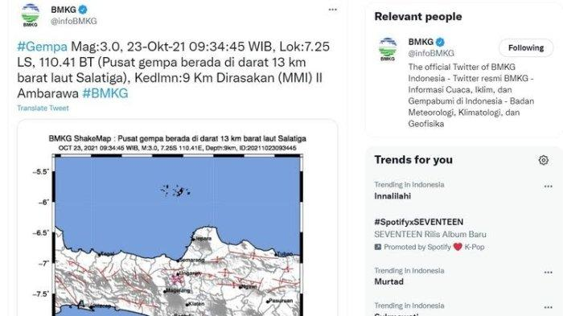

INFO TERKINI BMKG: Ini Titik Pusat dan Penyebab Gempa di Ambarawa Terbaru Hari Ini 23 Oktober 2021
Gempa tektonik bermagnitudo 3,0 mengguncang wilayah Kota Salatiga, Banyubiru, Bawen, dan Ambarawa, Jawa Tengah pada Sabtu (23/10/2021) sekitar pukul 00.32 WIB.Episenter gempa terletak pada koordinat 7,296 LS dan 110,38568 BT tepatnya di darat pada jarak 13 km arah barat laut Kota Salatiga dengan kedalaman hiposenter 6 km.